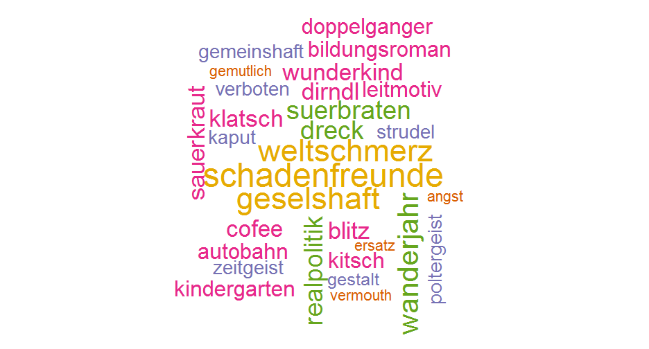
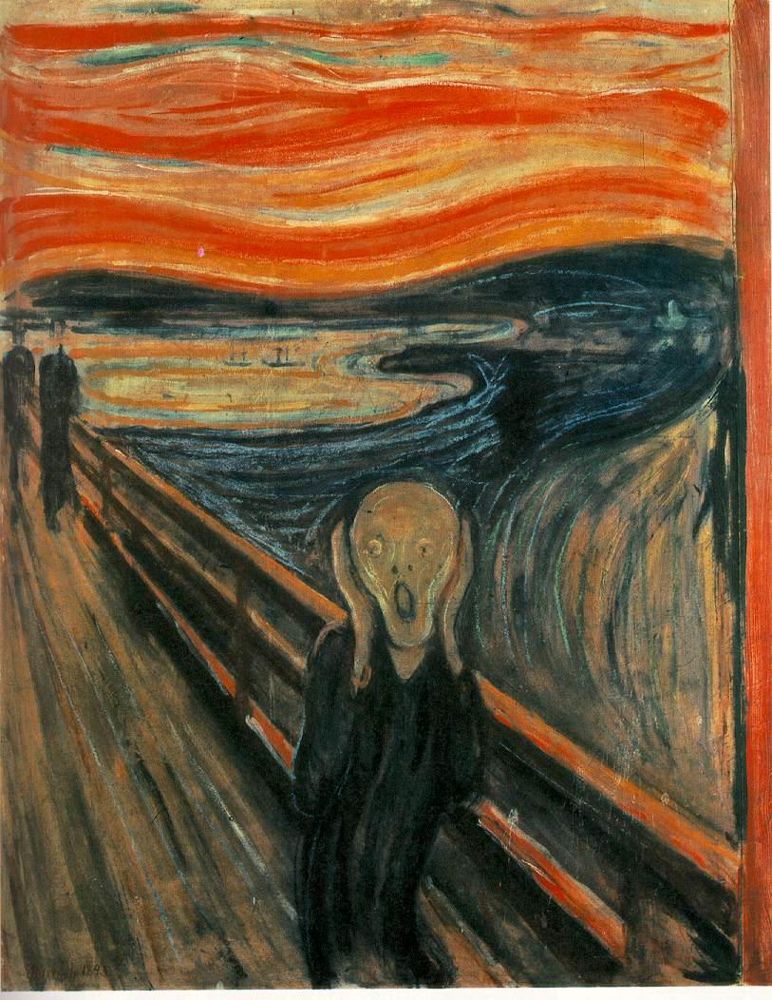
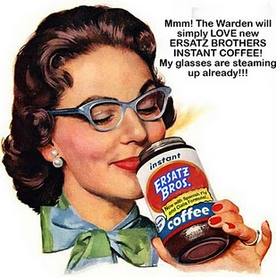
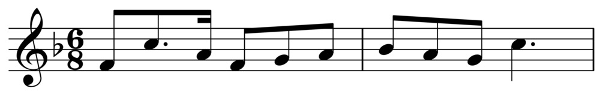
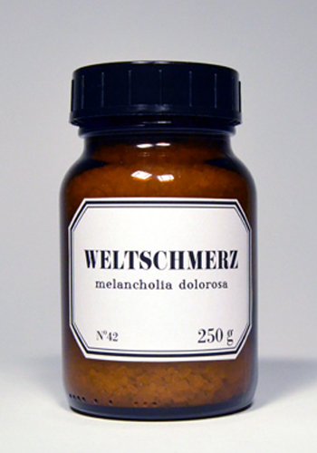

die Invasion
Lehnwörter unter uns
Mihau
Anglizismen
Deutsche Wörter im Englischen

Angst
Englisch: Intensiver Angst oder innere Unruhe.
Deutsch: sowohl in der Fachsprache der Psychologie und gemeinsame Sprache verwendet.

Dreck
Englisch: Material ohne Qualitäts.
Deutsch: Schmutz.

Ersatz
Englisch: Vertretung, meist von minderer Qualität angesehen.
Deutsch: Vertretung.

Gestalt
Englisch: ganze Natur von etwas.
Deutsch: Form.
Kaffeeklatsch
Englisch: Treffen, wo die Menschen beim Trinken Kaffee oder Tee trat≠schen.
Deutsch: siehe oben.

Kitsch
Englisch: klebrig Stil von Massen Kunst oder Design mit populären oder kulturellen Ikonen.
Deutsch: siehe oben.

Leitmotiv
Englisch: immer wiederkehrende musikalische Phrase.
Deutsch: siehe oben, aber auch in der Literatur.

Realpolitik
Englisch: Diplomatie basiert vor allem auf Macht, sondern als moralische oder ethische Ideen.
Deutsch: Politik, die sich eng an den als real anerkannten Bedingungen und Möglichkeiten orientiert.

Schadenfreude
Englisch: die Freude über das Missgeschick oder Unglück anderer.
Deutsch: siehe oben.

Strudel
Englisch: Mehlspeise aus einer gefüllten und gebackenen oder gekochten Teigrolle.
Deutsch: siehe oben.
Verboten
Englisch: untersagt, unerlaubt, hat autoritären Konnotationen.
Deutsch: untersagt, unerlaubt.
Weltschmerz
Englisch: Gefühl der Trauer und schmerzhaft empfundener Melancholie, das jemand über seine eigene Unzulänglichkeit empfindet, die er zugleich als Teil der Unzulänglichkeit der Welt, der bestehenden Verhältnisse betrachtet.
Deutsch: siehe oben.

Das Ende!
Vielen Dank für Ihre Aufmerksamkeit